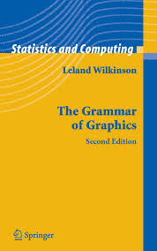
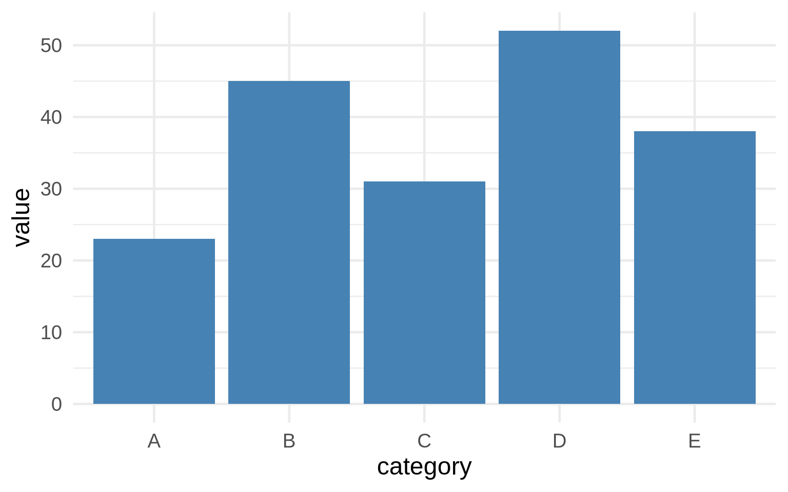
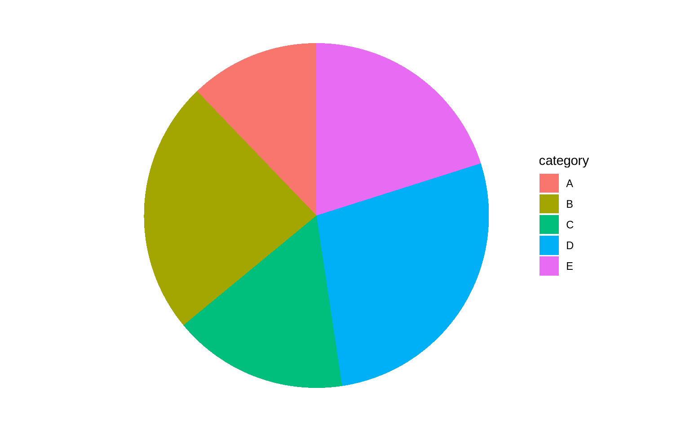
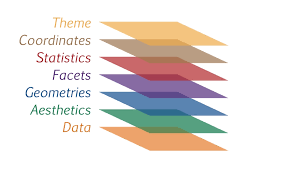
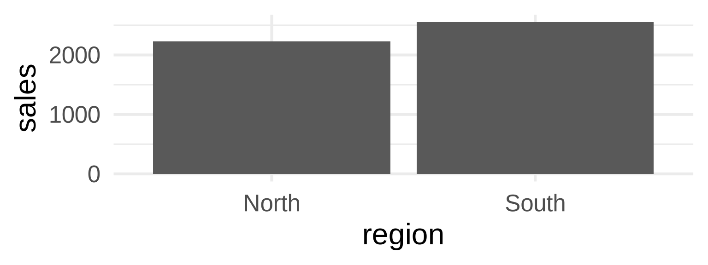
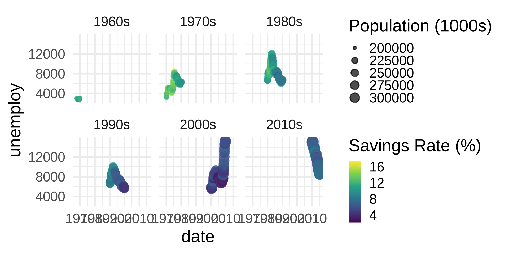
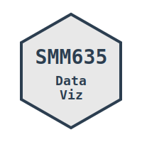

Design Variables and the Grammar of Graphics
SMM635 - Week 2
Bayes Business School
Today’s Journey
Part 1: Grammar of Graphics
- Framework & Philosophy
- Core Components
- Building Blocks
Part 2: Visual Forms
- Univariate Charts
- Bivariate Charts
- Multivariate Charts
Learning Objectives
By the end of today’s session, you will:
- Understand the grammar of graphics framework
- Map data to visual variables effectively
- Build complex visualizations from simple components
- Implement layered graphics approaches
- Create appropriate charts for different data types
Part 1: Grammar of Graphics
Moving Beyond Chart Types
How Do We Describe a Chart?
How Do We Describe a Chart?
Traditional Approach:
- Pie chart
- Bar chart
- Line chart
- Scatter plot
Note
We can use labels or conceptual categories
Grammar Approach:
- Data
- Aesthetics
- Geometries
- Scales
- Coordinates
Note
We can refer to a chart’s constitutive components
What is Grammar of Graphics (GoG)?
“Grammar makes language expressive. A language consisting of words and no grammar expresses only as many ideas as there are words.” - Leland Wilkinson

What’s the Connection between GoG and ggplot2?
- ggplot2 is an implementation of the Grammar of Graphics in R
- Created by Hadley Wickham based on Leland Wilkinson’s framework
- The “gg” in ggplot2 stands for “Grammar of Graphics”
- Allows users to build plots layer by layer using the grammar components
- Instead of choosing from pre-made chart types, you compose visualizations from fundamental building blocks

The Power of GoG
Important
A pie chart is just a stacked bar chart in polar coordinates! 🤯
A Bar Chart
Pie Chart = Bar Chart + Polar Coordinates
Core Components of the GoG
- DATA: What we want to visualize
- AESTHETICS: How we map data to visual properties
- GEOMETRIES: The visual marks we use
- FACETS: Creating small multiples
- STATISTICS: How to transform or summarize the raw data
- COORDINATES: The space we’re working in
- THEMES: Overall visual appearance
 Source: https://r.qcbs.ca/
1. Data: The Foundation
2. Aesthetics: Visual Mappings
Mapping Data → Visual Properties
Data Variables
- Continuous values
- Categories
- Ordered factors
- Time series
| date | region | sales | profit |
|---|---|---|---|
| 2024-01-01 | North | 1250.50 | 325.15 |
| 2024-02-01 | North | 980.75 | 245.20 |
| 2024-01-01 | South | 1450.25 | 410.75 |
| 2024-02-01 | South | 1100.00 | 290.50 |
Visual Variables
- Position (x, y)
- Size
- Color
- Shape
- Transparency
- Line type
Visual Variables in Action
Sales by Date, Region, and Profit
3. Geometries: Visual Marks
Best for: Scatter plots, distributions
Best for: Comparisons, counts
4. Facets: Small Multiples
Note
All data in a single plot
Note
Creates separate panels for each region
5. Statistics: Transforming Data
Note
No statistical transformation
Note
Adds linear regression line with confidence interval
6. Coordinates: The Canvas

Note
The standard x-y coordinate system
Note
Swaps x and y axes for horizontal bars
7. Themes: Overall Visual Appearance
Note
Clean, minimal design
Note
Black and white with borders
Note
Classic look with axis lines only
Building Complex from Simple
Part 1: Foundation
flowchart TD
START((" ")) --> A["DATA"] --> B["AESTHETICS"] --> C["GEOMETRY"]
style START fill:#90EE90,stroke:#333,stroke-width:1px
style A fill:#e1f5ff
style B fill:#e1f5ff
style C fill:#e1f5ff
Part 2: Refinement
flowchart TD
D["FACETS"] --> E["STATISTICS"] --> F["COORDINATES"] --> G["THEME"] --> END((" "))
style D fill:#e1f5ff
style E fill:#e1f5ff
style F fill:#e1f5ff
style G fill:#e1f5ff
style END fill:#FF6B6B,stroke:#333,stroke-width:1px
Layering: The Power of Composition
Note
Each layer adds information without obscuring previous layers
Part 2: Visual Forms
From Simple to Complex
Univariate Charts
Exploring Single Variables
Continuous Data
- Histograms
- Density plots
- Box plots
- Violin plots
Categorical Data
- Bar charts
- Pie charts
- Waffle charts
- Dot plots
Univariate: Continuous Data
Histograms divide data into bins and count observations in each bin.
- Best for: Understanding the distribution shape and identifying patterns
- Shows: Frequency, central tendency, spread, and skewness
- Key parameter: Number of bins affects granularity
Density plots show a smoothed version of the distribution.
- Best for: Comparing multiple distributions, identifying modes
- Shows: Probability density across the range of values
- Advantage: Smooth curve makes patterns easier to see
Univariate: Categorical Data
Bar charts use bar length to encode category counts or values.
- Best for: Comparing categories, showing rankings
- Shows: Frequency or magnitude for each category
- Advantage: Easy to compare values, natural visual ordering
Pie charts show parts of a whole as slices of a circle.
- Best for: Showing proportions when there are few categories (2-5)
- Shows: Relative proportions and percentages
- Limitation: Difficult to compare similar-sized slices
Bivariate Charts
Exploring Relationships Between Two Variables
| X Variable | Y Variable | Best Chart Types |
|---|---|---|
| Continuous | Continuous | Scatter plot, Line chart |
| Continuous | Categorical | Box plot, Violin plot |
| Categorical | Categorical | Heatmap, Grouped bars |
| Time | Continuous | Line chart, Area chart |
Bivariate: Continuous × Continuous
Scatter plots display individual data points in 2D space.
- Best for: Exploring relationships, identifying correlations, spotting outliers
- Shows: Direction, strength, and form of relationship between two variables
- Key insight: Patterns reveal linear, non-linear, or no correlation
Scatter plot with trend line adds a fitted model to show the relationship.
- Best for: Confirming correlation patterns, making predictions
- Shows: Overall trend and strength of linear relationship
- Options: Linear (lm), loess (local smoothing), or other methods
2D density plots show concentration of points as contours or filled regions.
- Best for: Large datasets where overplotting obscures patterns
- Shows: Areas of high and low data concentration
- Advantage: Reveals patterns in dense data clouds
Bivariate: Categorical × Continuous
Grouped box plots compare distributions across multiple categories.
- Best for: Comparing central tendency and spread across groups
- Shows: Median, quartiles, and outliers for each category
- Advantage: Compact representation of multiple distributions side-by-side
Violin plots combine box plots with kernel density estimation.
- Best for: Revealing distribution shapes and multimodality
- Shows: Full distribution shape for each category
- Advantage: More informative than box plots for complex distributions
Strip charts (jittered) show all individual data points.
- Best for: Small to medium datasets, showing actual observations
- Shows: Individual values and sample size per category
- Advantage: Transparency - shows the actual data, not summaries
Multivariate Charts
Beyond Two Dimensions
Strategies for encoding multiple variables:
- Color/Fill: 3rd dimension
- Size: 4th dimension
- Shape: 5th dimension (categorical only)
- Faceting: Create small multiples
- Animation: Time as dimension
Multivariate Example: The Economics Dataset
| date | pce | pop | psavert | uempmed | unemploy |
|---|---|---|---|---|---|
| 1967-07-01 | 506.7 | 198712 | 12.6 | 4.5 | 2944 |
| 1967-08-01 | 509.8 | 198911 | 12.6 | 4.7 | 2945 |
| 1967-09-01 | 515.6 | 199113 | 11.9 | 4.6 | 2958 |
| 1967-10-01 | 512.2 | 199311 | 12.9 | 4.9 | 3143 |
| 1967-11-01 | 517.4 | 199498 | 12.8 | 4.7 | 3066 |
| 1967-12-01 | 525.1 | 199657 | 11.8 | 4.8 | 3018 |
Multivariate Example: The Economics Dataset
Note
Dataset Variables:
- date: Month of data collection
- pce: Personal consumption expenditures (billions USD)
- pop: Total population (thousands)
- psavert: Personal savings rate (%)
- uempmed: Median duration of unemployment (weeks)
- unemploy: Number of unemployed (thousands)
Multivariate Example

Multivariate Example
Best Practices for Multivariate
- Start simple: Add dimensions gradually
- Prioritize: Most important variables get best encodings
- Test perception: Can viewers decode all dimensions?
- Consider alternatives: Sometimes multiple simple charts > one complex chart
- Interactive solutions: Tooltips, filtering, zooming
Putting It All Together
A Practical Workflow
Tip
- Understand your data
- Types of variables
- Relationships to explore
- Choose appropriate forms
- Match chart to data type
- Consider your message
- Apply the grammar
- Map variables to aesthetics
- Layer geometries
- Refine with scales
Key Takeaways
📊 The Grammar of Graphics provides a systematic framework for creating any visualization
🔧 Complex visualizations are built from simple, reusable components
🎨 Visual variables (position, size, color, etc.) are tools for encoding information
📈 Choose chart types based on data types and relationships
🔄 Iteration and layering lead to rich, informative graphics
Next Week
Topic 3: Exploratory Data Analysis
- EDA workflow and visualization
- Distribution visualization techniques
- Correlation and relationship exploration
- Time series exploration
- Case Study: Nomis Solutions
Homework
- Practice creating layered visualizations
- Experiment with different coordinate systems
- Read: Wickham’s “Layered Grammar of Graphics”
Questions?
Let’s explore the grammar together!
🌐 Course website: https://simonesantoni.github.io/data-viz-smm635
💬 Office hours: Wednesdays 3-5 PM

SMM635 - Data Visualization | Week 2